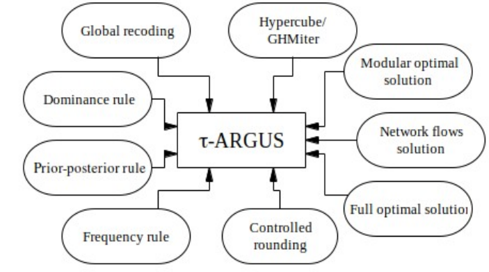
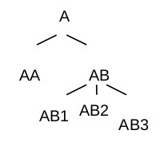

ソフトウェアパッケージτ-ARGUSは、表形式データに対する開示保護手法のためのソフトウェアツールを提供する。これは、表を修正して含まれる情報を少なく、あるいは詳細度を下げることによって実現される。τ-ARGUSでは表に対するいくつかの修正が可能である。表を再設計し、行や列を統合することができる。機微セルを抑制し、それらを保護するための追加セルを何らかの最適な方法で見つけることができる(二次セル抑制)。τ-ARGUSでは二次抑制の選択のためのいくつかの代替アルゴリズムが利用可能である。例えば、Hypercube/GHMiter法、モジュラー(Modular)法およびフル最適解法、そしてネットワークフローアルゴリズムに基づく手法である。セル抑制の代わりに、表の開示制御のための他の手法を用いることもできる。そうした代替手法の一つが制御丸め(Controlled Rounding)である。ただし、制御丸めの利用は度数表においてより一般的である。

本節ではまず、公表を予定している一連の表について、表形式データ保護問題を適切に設定する方法に関する基本的な論点を紹介し、表形式データの構造、とりわけ階層構造を持つ表について論じる。「τ-ARGUSが提供する二次セル抑制アルゴリズムの評価」の節では、τ-ARGUSが提供する二次セル抑制アルゴリズムの評価を行い、どのような状況でどのツールを使うべきかについての推奨を示す。その後、「表保護処理の効率化」の節では、特に連結表の場合における表保護処理を効率的に行うための指針を示す。最後に「導入例」の節で導入例を示して本節を締めくくる。
τ-ARGUSの最新版はGitHub(https://github.com/sdcTools/tauargus/releases)から入手できる。
本節の冒頭では、表形式データ保護の文脈における表の基本概念、および階層表や連結表といった複雑な構造について説明する。個々の回答データの保護と情報提供との間で良好なバランスを見出すためには――言い換えれば、開示制御の要請上完全には避けられない情報損失をコントロールするためには――抑制されるセルに付随する情報損失を何らかの形で評価する必要がある。そこで本節の最後では、情報損失を評価するための「セルコスト」という概念について説明する。
ある特定のデータセットの集計表の公表に関連する保護問題の数学的定式化を行うためには、それらの集計表のセル間に存在するすべての線形関係を考慮する必要がある。ここで重要な問いが生じる――そもそも「表」とは何なのか。機密性の懸念がなければ、統計家はデータセットの特定の性質を示すため、あるいは異なる変数間の比較を容易にするために表を作成する。したがって、単一の表が文字通りまったく異質なものを混在させることもありうる。第二に、統計家はそうした複数の「性質」を提示したいと考え、特定のデータセットから複数の表を公表することもある。では、一つの表はどこで終わり、次の表はどこから始まるのか。理想的な表とは、標準サイズの用紙にきれいに収まる表のことなのだろうか。表形式データ保護に関しては、表について異なる考え方をする必要がある。
規模表(magnitude table)は、量的変数――いわゆる「応答変数(response variable)」――の観測値の合計を表示する。この合計は、全観測値にわたって、および/または観測値のグループ内で表示される。これらのグループは、経済活動、地域、売上高の規模区分、法的形態など、一定の基準に従って回答者をグループ化することによって形成されうる。この場合、観測値のグループ化は、各個別回答者について観測されたカテゴリカル変数、すなわち「説明変数(explanatory variable)」によって定義される。また、応答変数自体のカテゴリによって観測値がグループ化されることもある。例えば、果物生産をりんご、洋なし、さくらんぼなどに分類する場合である。
表の「次元(dimension)」は、その表を規定するために用いられるグループ化変数の数によって与えられる。表の「周辺(margins)」または「周辺セル(marginal cells)」とは、より少ない数のグループ化変数によって規定されるセルのことである。グループ化変数の数が少ないほど、周辺セルの「水準(level)」は高くなる。例えば、ある事業所調査の2次元表は、経済活動と企業規模区分によってグループ化された観測値の合計を提供することがある。同時に、経済活動のみ、あるいは規模区分のみによってグループ化された観測値の合計も表示することがある。これらは、この表の周辺/周辺セルである。全観測値にわたる合計が提供される場合、それを「総計(total)」あるいは「全体総計(overall total)」と呼ぶ。
比率や指数を示す表は、通常、表形式データ保護問題を定義しない点に注意されたい。なぜなら、そのような表のセル間には加法的な構造がなく、セル値と寄与単位の値との間にも加法的構造がないからである。例えば平均賃金を考えてみよう。この場合、セル値は複数企業の賃金総額を従業員数の合計で割ったものとなる。ただし例外もありうる。例えば、分母(この場合は従業員数)が企業レベルでもセルレベルでもかなり近似的に推定できると仮定することが現実的であれば、分子側の変数(この例では賃金)に基づいて開示制御手法を適用することが実際に妥当な場合もある。
政府統計システム内で収集されるデータは、データに対する関心が大きく異なる多数の利用者の要求を満たす必要がある。ある利用者は市区町村レベルのデータを必要とし、また別の利用者は特定の経済部門についての詳細データを必要とするが地域別の詳細は不要、という場合もある。統計家としては、こうした関心の幅広さに対応するため、データを複数の詳細度で提供しようとする。公表用の表を作成する際には、通常、説明変数を複数の方法で組み合わせる。同一の応答変数についてのデータを示す2つの表が、少なくとも一つの説明変数のカテゴリを共有している場合、両方の表に共通して現れるセルが存在することになる――そのような表は、共通して持つセルによって「連結(linked)」されているという。統計的な詳細度の幅を提供するために、回答者を分類するための精緻な分類体系を用いる。したがって、回答者はしばしば同一の分類体系の複数のカテゴリに属することになる――例えば、特定の州の中の特定の郡の中の特定の市区町村、といった具合であり、その結果、地域分類の3つのカテゴリに該当することになる。
階層変数のカテゴリ間の構造は、表にも部分構造(sub-structure)をもたらす。以下で「部分構造を持たない部分表(sub-table)」について述べる場合、それは次のような方法で構成される表を意味する。
任意の説明変数について、最下位水準ではない特定のカテゴリ(例えば「食品製造業」)を一つ選ぶ。次に「部分変数(sub-variable)」を構成する。この部分変数は、最初のステップで選んだカテゴリと、そのカテゴリに属する直下の水準のカテゴリ(パン製造業者、精肉業者など)のみから構成される。各説明変数についてこれを行った後、これらの部分変数の集合によって規定される表は部分構造を持たない表となり、元の表の部分表となる。部分表内の各セルは、元の表にも属している。元の表の多くのセルは複数の部分表に現れる――すなわち、これらの部分表は連結している。例6は、階層構造を持つ1次元表の単純な例を示している。
ある変数EXPのカテゴリA、AA、AB、AB1、AB2、AB3が、下図に示すような階層構造をなしていると仮定する。

表全体がEXPのカテゴリ別の売上高を示すとする。このとき、この表の2つの部分表は次のようになる。
| EXP | 売上高 | |
|---|---|---|
| A | ||
| AA | ||
| AB |
| EXP | 売上高 | |
|---|---|---|
| AB | ||
| AB1 | ||
| AB2 |
セルABが両方の部分表に現れることに注意されたい。
もちろん、連結された表や部分表の集合をセル抑制手法によって保護する場合、各表(または各部分表)について個別に二次抑制を選択するだけでは不十分である。そうしなければ、例えば、あるセルが一方の表では二次抑制として用いられ抑制される一方で、別の表では抑制されないままである、といった事態が起こりうる。この場合、2つの表を比較する利用者は、最初の表の機微セルを開示できてしまうことになる。一般的なアプローチは、各表を個別に保護しつつ、他の表にも属する補完的な抑制があればそれを記録し、この表でも同様に抑制した上で、この表についてセル抑制手続きを繰り返す、というものである。このアプローチは「バックトラッキング手続き(backtracking procedure)」と呼ばれる。階層表に対するバックトラッキング処理の中では、通常、各部分表についてセル抑制手続きが複数回繰り返されることになるが、この処理に必要な計算量は、表全体を一度に保護する場合よりもはるかに少なくなる。
ただし、バックトラッキング手続きは、Cox (2001) の用語法における「グローバル(global)」な手法ではないことを強調しておかなければならない。二次セル抑制の非グローバル手法に関連する問題についての議論は Cox (2001) を参照されたい。
連結表構造の数学的定式化については de Wolf (2007) および de Wolf, Giessing (2008) を参照されたい。
表形式データ保護の課題は、前節で説明したように、機微セルの真の値について必要な不確実性を生じさせつつ、表内の情報をできる限り保持することである。二次抑制の「最適な集合」を選択する作業、あるいは表を最適な方法で調整する作業を数理計画問題として表現できるようにするためには、データの情報量を何らかの形で評価する必要がある。これらの数理モデルにおいて、情報損失は、二次抑制または調整対象となる非機微セルに付随するコストの合計として表現される。
セル抑制については、情報損失の最小化を抑制セル数の最小化と同一視する考え方が、おそらく最も自然な発想であろう。これは技術的には、各セルに同一のコストを割り当てることで実装される。しかし経験上、この考え方はしばしば多くの大規模なセルが抑制される抑制パターンをもたらすことが分かっており、これは望ましくない。実務上は、セル値、その累乗変換、あるいはセル度数に基づく別のコスト関数の方が良好な結果をもたらす。数値以外にも、表内における位置(総計や小計はしばしば重要度が高いと評価される)やカテゴリ(特定のカテゴリの変数はしばしば二次的な重要性しか持たないとみなされる)など、複数の基準が特定セルの重要性についての利用者の認識に影響を与えうる点に注意されたい。τ-ARGUSは、コスト関数を選択し、そのべき乗変換を行うための特別な機能を提供している。
コスト関数は、あるセルの相対的な重要度を示す。原則として、利用者は個々のセルに個別のコストを割り当てることもできるが、それはかなり煩雑な作業になってしまう。そこでτ-ARGUSでは、いくつかの標準的なコスト関数が用意されている7。
特に後者2つのケースでは、セル値が大きなセルを過度に優遇してしまう可能性がある。10倍大きいセルは本当に10倍重要なのだろうか。時にはもう少し穏やかな評価が必要となる。コスト関数に何らかの変換を施すことが望ましい。よく使われる変換は平方根変換または対数変換である。Box and Cox (1960) は、べき乗変換の体系を提案している。
$$ y = \frac{x^{\lambda} -1}{\lambda} $$この式において、$\lambda = 0$の場合は対数変換となり、この$-1$は式を$\lambda$について連続にするために必要である。
この連続性の側面、および負の値になりうるという事実を踏まえ、τ-ARGUSでは$\lambda$変換の簡略版を導入している。
$$ y = \begin{cases} x^{\lambda} \quad &\text{for }\lambda\neq0 \\ \text{log}(x)\quad &\text{for }\lambda=0 \end{cases} $$したがって、$\lambda = \frac{1}{2}$を選べば平方根が得られる。
ソフトウェアパッケージτ-ARGUSは、二次抑制を割り当てるための多様なアルゴリズムを提供しており、これらについては別の節で詳しく説明する。それらのアルゴリズムの一部はまだ完全には開発されていない、あるいはまだパッケージに完全には統合されていないものもあるが、そのうち2つは、自動化された表形式データ保護のための強力なツールとなっている。本節ではこの後者の2つのアルゴリズムに焦点を当てる。両者を、保護された表の品質面について比較しつつ、実務上のいくつかの論点も考慮する。この比較に基づき、最後にこれらのアルゴリズムの利用に関する推奨を示す。
本節ではまず、最低限の保護基準であるPS1およびPS2を導入する。実務で利用可能であるためには、アルゴリズムがこれらの基準を満たすことが「必須」である理由を説明する。これらの基準に照らして「利用可能」と判定されたアルゴリズムについては、情報損失および開示リスクに関するアルゴリズムの性能を比較した研究のいくつかの結果を報告する。
既出の節では、安全な抑制パターンのための基準を定義した。これらの基準すべてを満たさない限りいかなる抑制パターンも実行可能とはみなさない、というアルゴリズムを設計することはもちろん可能である。しかし実務上、そのようなアルゴリズムは、公的統計の大規模で詳細な集計表に適用した場合、あまりに多くの計算機資源(特にCPU時間)を必要とするか、あるいは利用者が過剰抑制の強い傾向を甘受せざるを得なくなるかのいずれかとなる。そこで以下では、採用された安全性ルールに関して、機関にとって許容可能かもしれない残余の開示リスクを除いて安全であるとみなせる抑制パターンについて、最低限の基準を定義する。これらの基準は、たとえ細心の注意を払って実施されたとしても、従来の手作業によるセル抑制手続きで達成できる水準よりも明らかに優れている、あるいは少なくとも同等であることに留意されたい。本評価では、少なくともこの緩和された基準に関して抑制パターンの妥当性を保証するアルゴリズムのみを対象とする。
階層的な部分構造を持つ表では、表全体の方程式の集合に基づいて計算される実行可能区間は、通常、部分構造を持たない部分表に対応する個別の方程式集合に基づいて計算される区間よりもはるかに狭くなる傾向がある。さらに、あるセルの唯一の回答者(いわゆる「シングルトン」)が持つ追加知識を利用することで、その知識がない場合よりもはるかに狭い区間を導出することが可能になる8。
侵入者は表全体を考慮する労力をかけるよりも、各部分表について個別に実行可能区間を推測する、という単純だがおそらくより現実的な開示シナリオと、シングルトンである回答者は自身の特別な追加知識を用いて、同じ行または列(より一般には同じ関係式)内にある他の抑制セル値を明らかにしようとする可能性が高い、という仮定に基づけば、以下の最低保護基準(PS)が妥当であるといえる。
(PS1) 正確な外部開示に対する保護:
有効な抑制パターンの下では、(シングルトンが持つような)追加知識を考慮せず、かつ表の方程式の部分集合を個別に考慮する場合――すなわち各部分表について個別に実行可能区間を計算する場合――に、機微セルの値を正確に開示することはできない。(PS2) シングルトン開示に対する保護:
表のある行(または列)内に抑制セルが2つしかない抑制パターンは、その2つがそれぞれ異なる単一の回答者に対応する場合、有効ではない。(PS1*) (PS1)の拡張であり、正確な開示ではなく推論的開示(inferential disclosure)を対象とする。
(PS2*) (PS2)の拡張であり、ある単一の回答者が、表の同じ行(または列)に位置するとは限らない別の単一回答者のセルを開示しうる、より一般的なケースを対象とする。
τ-ARGUSは基本的に、モジュラー(Modular)法とハイパーキューブ(Hypercube)法という2つのアルゴリズムを提供しており、いずれも上記の開示リスクに関する最低基準を満たしている。両者とも、反復手続きの中でバックトラッキングのアプローチをとって階層表を保護する。すなわち、階層表を連結された非構造化表の集合に分割する。セル抑制問題は各部分表について個別に解かれる。二次抑制は、重複する部分表について整合するよう調整される。
モジュラー法(HiTaSアルゴリズムとも呼ばれる。de Wolf, 2002を参照)は、Fischetti and Salazar-Gonzálezによって実装された最適解法に基づいている。階層表をより小さな非構造化部分表に分解し、これらの部分表を保護した上で、バックトラッキング手続きによってそれらを連結することで、表全体が保護される。モジュラー法の説明、および最適なFischetti/Salazar-González法の説明については他の節を参照されたい。Fischetti and Salazar-González (2000) も参照のこと。
ハイパーキューブ法は、Repsilber (2002) によって実装されたハイパーキューブ・ヒューリスティックに基づいている。この手法の説明についても他の節を参照されたい。
τ-ARGUSの現行の実装では、最適化ツールの利用には追加の商用ソフトウェア(LPソルバー)のライセンスが必要である一方、ハイパーキューブ法の利用は無償である点に注意されたい。モジュラー法はWindowsプラットフォームでのみ利用可能であるのに対し、ハイパーキューブ法にはUnix、IBM(OS 390)、SNI(BS2000)向けのバージョンも存在する。
モジュラー法とハイパーキューブ法はいずれも、上記の基準PS1*(推論的開示に対する保護)およびPS2について十分な保護を提供する。シングルトン開示に関しては、ハイパーキューブ法は拡張基準PS2*さえも満たす。しかし、ハイパーキューブ法のヒューリスティックなアプローチにおける単純化のために、一定の過剰抑制の傾向が生じる。そこで本評価では、PS1*の代わりに縮小された基準PS1のみを満たす緩和版――すなわち推論的開示に対する保護をまったく行わない版――も対象に含める。以下ではこの手法をHyper0と呼ぶ。Hyper0による処理は、τ-ARGUSでハイパーキューブ法を実行する際に「推論的開示に対する保護を要求する」オプションを無効化するだけで実現できる。
| アルゴリズム | モジュラー | ハイパーキューブ | Hyper0 |
|---|---|---|---|
| 二次抑制の手続き | Fischetti/Salazar最適化 | ハイパーキューブ・ヒューリスティック | |
| 保護基準 - 区間/正確な開示 | PS1* | PS1* | PS1 |
| 保護基準 - シングルトン | PS2 | PS2* | PS2* |
以下では、2つの評価研究(以下、研究Aおよび研究Bと呼ぶ)の結果を簡潔に報告する。これらの研究の詳細については、研究Aについては Giessing (2004)、研究Bについては Giessing et al. (2006) を参照されたい。いずれの研究も、強く歪んだ分布を持つ規模変数の集計表に基づいている。
研究Aでは、CASCの成果物3-D3として提供された合成ミクロデータセットから生成された多様な階層表を用いた。具体的には、一方の次元が階層構造を持つ2次元表および3次元表を生成した。この階層の深さを操作することで7種類の異なる表が得られ、セル総数は460から150,000セルの範囲であった。研究AにはHyper0法は含まれていない点に注意されたい。
ドイツ連邦および州統計局のために実施された研究Bでは、ドイツの売上税統計の2次元表を用いた。結果は、第一次元がNACE経済分類による7水準の階層構造を持ち、第二次元が変数「地域(Region)」による4水準の構造を持つ表について導出された。
二次抑制による情報損失を、二次抑制の数とセル値の観点から比較し、保護された表の開示リスクを分析する。下表は、研究Aで得られた情報損失に関する結果を示している。
| 表 | 階層水準 | セル数 | 抑制数(%) | 抑制の付加価値(%) | ||
|---|---|---|---|---|---|---|
| Hypercube | Modular | Hypercube | Modular | |||
| 2次元表 | ||||||
| 1 | 3 | 460 | 6.96 | 4.35 | 0.18 | 0.05 |
| 2 | 4 | 1,050 | 10.95 | 8.29 | 0.98 | 0.62 |
| 3 | 6 | 8,230 | 14.92 | 11.48 | 6.78 | 1.51 |
| 4 | 7 | 16,530 | 14.97 | 11.13 | 8.24 | 2.12 |
| 3次元表 | ||||||
| 5 | 3 | 8,280 | 14.63 | 10.72 | 6.92 | 1.41 |
| 6 | 4 | 18,900 | 17.31 | 15.41 | 12.57 | 3.55 |
| 7 | 6 | 148,140 | 15.99 | 10.63 | 23.16 | 3.91 |
下表は、第二次元の変数「地域」の上位2水準、すなわち全国レベルと州レベルにおける、研究Bの情報損失の結果を示している。
| 二次抑制のためのアルゴリズム | 数 | 付加価値・全体(%) | |||
|---|---|---|---|---|---|
| 州レベル | 全国レベル | ||||
| 実数 | % | 実数 | % | ||
| モジュラー | 1,675 | 10.0 | 7 | 0.6 | 2.73 |
| Hyper0 | 2,369 | 14.1 | 8 | 0.7 | 2.40 |
| ハイパーキューブ | 2,930 | 17.4 | 22 | 1.9 | 5.69 |
両研究とも、最良の結果はモジュラー法によって得られることを示しており、一方でハイパーキューブ法のいずれの変種を用いても、モジュラー法の結果と比較してしばしばかなり大きな二次抑制量の増加をもたらす。この増加の大きさは集計の階層水準によって異なり、表の上位水準ほど、下位水準よりも増加が大きくなる傾向がある。上表に示された研究Bの結果を見ると、全国レベルではハイパーキューブ法で約214%(Hyper0では14%)の増加が観察される一方、州レベルでは75%(41%)の増加にとどまる。Giessing et al. (2006) では、郡(district)レベルの結果も報告している。この水準では、上位のNACE水準でハイパーキューブ法について約28%(Hyper0では9%)、下位水準でハイパーキューブ法について20%(Hyper0では14%)の増加であった。研究Aでは、ハイパーキューブ法について概ね30%前後の増加が観察され、最小の2次元事例と最大の3次元事例ではそれぞれ50%、60%にも達した。特に、集計に短い方程式(該当項目数が少ない)が多く含まれる場合、ハイパーキューブ法は(モジュラー法と比較して)とりわけ性能が悪くなる傾向があるとの印象を得ている。
上記の研究Bの結果から得られた最初の結論は、大規模な過剰抑制のため、推論的開示を防止する変種のハイパーキューブ法をそれ以降の実験対象から除外することであった。Hyper0は明らかに次点の性能にとどまるものの、前述の技術的・コスト的な利点があるため、Hyper0によるテストは継続することとなった。
変数「地域」を市区町村レベルまで詳細化した州表を用いた実験では、この表の追加的な詳細化が、郡レベルにおける抑制の増加を、Hyper0では約70~80%、モジュラー法では約10~30%もたらすことが分かった。
既出の節で説明した通り、原則として、機微セルの実行可能区間の限界値を用いて、一次開示リスク評価に用いられた手法に照らして過度に近い個々の回答者の寄与に関する限界値を推測できてしまう場合、推論的開示のリスクが存在する。しかし、大規模で複雑な構造を持つ表においては、このリスクはむしろ潜在的なリスクに過ぎず、当該セルを公表した場合に生じる開示リスクとは比較にならない。結局のところ、表の方程式全体の集合に基づいて実行可能区間を計算するために必要な労力はかなり大きい。さらに、開示リスクの一部のケースでは、実際に個々の寄与を開示できるのはインサイダー(他の回答者)のみである。
いずれにせよ、この定義のもとで、表の方程式全体の集合を考慮すると、研究Bでは、NACEおよび州別の集計表、および2つの州について個別に監査を行ったより詳細な表(郡レベルまで)について実行可能区間を計算する監査ステップにおいて、約4%(モジュラー法による保護)から約6%(Hyper0による保護)の機微セルがリスクにさらされていることが分かった。研究Aでは、モジュラー法(ハイパーキューブ法)で保護された2次元表について最大約5.5%(1.3%)、3次元表について最大2.6%(モジュラー法)および5.6%(ハイパーキューブ法)のセルがリスクにさらされていることが分かった。
もちろん、監査を部分構造を持たない各部分表について個別に行う場合には、このような分析にかかる労力がはるかに小さいため、リスクにさらされるセルの潜在的リスクははるかに高くなる。モジュラー法はPS1*基準に従って保護を行うため、モジュラー法で保護された表にはそのようなセルは存在しない。Hyper0については、研究Bにおいて、詳細な集計表のいくつかの部分表について実行可能区間を計算したところ、約0.4%のセルがリスクにさらされていることが分かった。
これらの部分表について、モジュラー法で保護した場合、シングルトンの約0.08%について、別のシングルトンがその寄与を開示できてしまうことが判明した。Hyper0はPS2*基準を満たすため、Hyper0で保護した表ではもちろんそのようなケースは見つからなかった。
τ-ARGUSのモジュラー法とハイパーキューブ法はいずれも、二次セル抑制のための強力なツールである。外部開示に対する保護に関しては、両者とも同じ保護基準を満たしている。しかし、情報損失に関してはモジュラー法の方がはるかに良好な結果を与える。保護基準を緩和したハイパーキューブ法の変種(Hyper0)と比較しても、モジュラー法の方が明らかに優れた性能を示す。この手法は(高速なハイパーキューブ法と比較して)計算時間が長くなることが実務上の悩みの種となりうるが、結果はこの追加的な労力を明確に正当化する――結局のところ、例えば、2次元で詳細な階層構造を持ち80万セルを超える表を、わずか1時間程度で保護することが可能なのである。調査処理全体にかかる総コストを考えれば、モジュラー法の最適化ツールを実行するために必要な商用ライセンスのコストを避けるためだけにハイパーキューブ法(またはHyper0)を用いることも正当化されないであろう。
3次元表においても二次抑制の割り当てにモジュラー法を用いることを推奨する。ただし、それらの表が巨大な分類によって規定されている場合、長い計算時間が実際の障害となりうる。例えば、823×18×10の表(第一次元が階層構造)の処理には約11時間を要した。同じ表をHyper0で保護した場合は約2分で完了した。残念ながら、この事例でモジュラー法をHyper0に置き換えると、二次抑制数が約28%増加する。
我々の知見によれば、以下の場合には、ハイパーキューブ法(すなわちHyper0)がモジュラー法の良い代替手段になると期待される。
次節では、表の規模が大きすぎるためこれらの条件に照らしてモジュラー法の利用が選択肢とならないように思われる場合に、ハイパーキューブ法またはHyper0の利用に限定されることを避けるための対処法についていくつかのヒントを示す。
シングルトン(インサイダー)開示に対する保護に関しては、ハイパーキューブ法の方がより高い基準を満たす。しかし、我々の実証結果は、実務上、モジュラー法によってこの種の開示リスクに対して保護されないまま残るシングルトンセルは非常に少ないことを確認している。したがって、この問題は、線形計画法さえ用いない専用の監査ステップによって容易に解決できると確信している。
本節では、開示分析を容易にする方法、およびτ-ARGUSの手法を効率的に用いる方法について指針を示す。実務上の性能を改善するためのさらなるヒントやコツについては van der Meijden (2006) を参照されたい。
特に詳細な階層構造を持つ大規模な表では、パラメータ$\lambda$の選択が抑制パターンに大きな影響を与えることがあり――その結果は予想外のものになりうることが確認されている。通常、一定のセルコストは、(相対的に)少ない数の二次抑制を伴う解につながると予想される。しかし階層表では、このコスト関数を用いた場合、モジュラー法は内部セルよりもむしろ部分表の周辺セルを抑制する傾向があり、その結果、(連結された)部分表において追加の抑制が必要になることが判明する場合がある。この効果は非常に強くなることがあり、結果として、ほぼ一定のコストをもたらすゼロに近い$\lambda$の方が、より大きな$\lambda$(例えば0.5)を選んだ場合よりも多くの抑制数につながることがある。したがって、大規模な表については、異なる$\lambda$の値で結果をテストすることが妥当である。
既出の節において、表形式データ保護のための表の設定方法についてはすでに論じた。公表の構想がまだ固まっていない場合、表の再設計によって問題の複雑さを軽減できることがある。
表に多数の機微セルが存在する場合、それは表を規定する変数(spanning variables)が詳細すぎることを示唆しているかもしれない。その場合、表の特定の行や列を統合することを検討できる(公表方針上、これが常に可能とは限らない)。そうしなければ、二次セル抑制の数が単に膨大になりすぎるかもしれない。結合されたセルは個々のセルのいずれよりも安全である、というのがセンシティビティルールの性質である。したがって、この操作の結果、安全でないセルの数は減少する。この方法によってすべての安全でない組み合わせを排除しようと試みることもできるが、それは許容できないほど高い情報損失につながりかねない。その代わりに、どこかの時点で統合作業を止め、残った安全でない組み合わせについてはセル抑制などの他の技法を用いて排除するという方法もある。
実務上、公表物全体の各表について個別に開示分析を行うことは、非実用的でありまた妥当でもないとしばしばみなされる。よく知られた簡略化の方法は、特定の「主導変数(lead variable)」に分析を絞ることである。これらの主導表を上述のようにτ-ARGUSで保護し、得られたパターンを他のすべての表に適用する。この戦略は、公表物内の異なる表の間に内在する関係を利用することで、抑制セルの再計算を防ぎ、効率的であるという利点を持つ。他の表における特定のセルについて、集中度ルールに従えば安全でないとみなされるべきセルのすべてが実際には安全でないとみなされるとは限らないという事実は、軽微な問題とみなされる。
抑制パターンをそのまま複製する方法と、各表を個別に保護する方法との間の妥協案として、一次抑制のみを調整するという方法がある。この戦略は、τ-ARGUSにおける「シャドウ変数(shadow variable)」という概念によって支えられている。シャドウ変数は主導表に対して用いられ、一次的に安全でないセルを見つけるためだけに使われる。その後、そのパターンを各表それぞれに適用し、二次セル抑制は従来通りの方法で行われる。
一次的に安全でないセルに関する理論全体は、あるセル内の特定の大口寄与者がリスクにさらされ、保護を必要としうるという考え方に基づいている。したがって、最大の寄与者はセンシティビティルールにおいて重要な役割を果たす。
多くの場合、セル値自体が寄与者の規模の非常に良い推定値となる。しかし、表のセル値が必ずしも企業規模の最良の指標とは限らない場合もある。例えば、セル値がある商品への投資額である場合、最大手の企業が必ずしも最大の値を持つとは限らない。センシティビティルールを単純に適用すると、比較的小規模な企業がそのセルを支配し、セルを安全でないものにしてしまうという状況が生じうる。この小規模な企業があまり知られておらず目立たない存在であると仮定すれば、このセルを保護する理由はない。
本当に大規模な企業を保護したい場合には、同じ規定変数(例えば売上高)を持つ別の表(シャドウ変数)にセンシティビティルールを適用し、一次的に安全でないセルのパターンを利用するとよい。そのパターンを現在の表にコピーし、通常の方法で二次的に安全でないセルを計算する。
τ-ARGUSでは、一次的に安全でないセルが計算される表を「シャドウ表(shadow table)」と呼ぶ。
シャドウ変数を用いるもう一つの理由として、一つのデータセットに基づく、同じ規定変数を持つ異なる表の間でパターンを調整することが挙げられる。周期的データセットに関する後述の記述を参照されたい。
開示分析を簡略化するためによく用いられる戦略は、公表される集計セル間の完全な線形関係を、表保護の手続きに反映させないことである。これが正当化される典型的なケースは次の通りである。例えば、地域別に、外国出身の季節労働者の賃金($S_{\text{foreigners}}$)と、季節労働者全体の賃金($S_{\text{S-W}}$)を公表するとしよう。通常、表保護のためには、次の関係
$$ S_{\text{S-W}} = S_{\text{foreigners}} + S_{\text{non-foreigners}} \ , \qquad \text{(R1)} $$を考慮しなければならない。たとえ$S_{\text{non-foreigners}}$のデータを公表するつもりがなく、そもそも収集していなかったとしてもである。通常、$S_{\text{S-W}}$のデータは他の関係式にも現れる。例えば、常用労働者のデータと合わせて次のように現れる。
$$ S_{\text{all}}= S_{\text{S-W}} + S_{\text{permanent}} \ , \qquad \text{(R2)} $$そのため、連結された一連の表を保護しなければならなくなる。実務的な観点からは、これはもちろん望ましくない。ここで、$S_{\text{non-foreigners}}$の値がすべての地域について$S_{\text{foreigners}}$の値よりもはるかに大きく、かつ$S_{\text{non-foreigners}}$が公表されないと仮定しよう。この場合、$S_{\text{S-W}}$の値を用いて機微な$S_{\text{foreigners}}$セルの値を推定することはできない。したがって、$S_{\text{S-W}}$と$S_{\text{foreigners}}$の抑制パターンを調整する必要はない。これは、地域別の(R1)の集計について表形式データ保護を行う必要がないことを意味する。地域別の$S_{\text{S-W}}$(または(R2))と、地域別の$S_{\text{foreigners}}$という、2つの独立した表を保護すれば十分である。
これは、連結表構造を回避する方法の一例である。他方で、そのような構造は、表形式データ保護問題を実務上取り扱いやすくする上で非常に有用な場合もある。
労務費に関するデータを、NACE分類、地域、従業員数の規模区分の情報とともに収集したとしよう。NACE、地域、規模区分別の労務費の3次元集計表を公表したいと考えるかもしれない。しかし、この表を見ると、経済のある部門(例えばNACE$_1$)についてはこの詳細度で十分かもしれないが、他の部門(NACE$_2$、NACE$_3$、…、NACE$_n$)については十分でないことに気づくかもしれない。それらの部門では、下位水準の多くのセルが空であるか機微セルであるかのいずれかである。前節の情報損失に関する部分の末尾で指摘した通り、集計表の詳細度が高くなるほど、一般に上位水準での抑制が増える。この種の過剰抑制は、表を分割して一連の連結表とする「分割アプローチ」を採ることによって回避できる。すなわち、1つの表の代わりに、以下の3つの表を保護する。1)地域・規模区分・NACE$_1$別の労務費、2)地域・NACE別の労務費、3)規模区分・NACE別の労務費、である。この場合、NACE$_1$に属さないNACEカテゴリについては、特定の地域・特定の規模区分における労務費データを公表できないことになるが、この分割アプローチによって得られる追加的な非抑制情報(単一の3次元表のみを扱う単純なアプローチと比較して)は、通常、はるかに高く評価される。
特に二次セル抑制にモジュラー法を用いる場合、階層構造を持つ変数を用いることは、通常、計算の複雑さ、ひいては計算時間を大幅に削減する助けとなる。方程式あたりのカテゴリ数が少ないほど、プログラムは高速に動作する。ハイパーキューブ法については、これはあまり問題にならない。この手法では、一般に、関係式内のカテゴリ数が極端に少ない構造を避けることが望ましい。この手法は大規模な表向けに開発されたものであり、関係式あたりのカテゴリ数は通常20未満である。
ここでは、例えば$T_1$、$T_2$、$T_3$という一連の連結表を、二次セル抑制にモジュラー法を用いて処理する方法を説明する。この処理は通常、反復的なプロセスとなる。ここで説明する手法は、de Wolf, Giessing (2008) では「伝統的手法(traditional method)」と呼ばれている。De Wolf, Giessing (2008) は、連結表を扱うためのより実用的なアプローチとして、τ-ARGUSのモジュラー法の拡張(「適応型モジュラー法(adapted Modular)」と呼ばれる)を提案している。この拡張が利用可能になれば、以下で説明する手法は、適応型モジュラー法を連結表全体の集合に適用できない場合(例えば表が非常に多くの次元を含む場合)にのみ用いるべきである。
続いて問題となるのは、τ-ARGUSの用語でいう「手動で安全でない(manually unsafe)」セルに対して、どのような保護レベルを割り当てるかである。適切な方法は、CTA手法を用いて、抑制パターン$S_{11}$と整合する(すなわち、$S_{11}$に含まれない$T_1^*$の全セル値が元の$T_1$のセル値と一致する)、かつ機微セルの保護レベルによる制約を満たす、$T_1$に最も近い調整済み表$T_1^*$を求めることであろう。そのうえで、調整済みのセル値と元のセル値との間の距離に基づいて、$S_{11}$のセルの保護レベルを計算することができる。実務上は、はるかに単純なアプローチが通常採られており、セル値の固定割合(τ-ARGUSの用語でいう「手動安全範囲(manual safety range)」)を保護レベルとして割り当てる。しかし、どの割合が適切かを判断する方法はない。大きく強く機微な性質を持つセルに対する二次抑制が小さなセルである場合、100%の保護レベルさえ必要になることがある。他方で、非常に小さい機微セルに対する二次抑制が大きなセルである場合、1%でも過剰保護を招くことがある。
このようにして$T_2$を処理した後、$T_3$を処理する。ここでは、$S_{113}$のセルに加えて、追加抑制として$S_{213}$のセル――すなわち、最初の反復で表$T_2$について選択された二次抑制のうち、$T_3$のセルと一致する部分集合――も考慮する必要がある。
このように、反復ステップ$k_0$において表$T_i$($i=1,2,3$)を処理する際には、追加抑制として
$$ \bigcup\limits_{k < k_{0}}{\left( S_{1\text{ki}} \cup S_{2\text{ki}} \cup S_{3\text{ki}} \right)} \cup \bigcup\limits_{j < i}{S_{\text{jk}_{0}i}} $$を考慮する。その一方で、これらの表が共通して持つセル――すなわち$T_{i_{j}}$($j \neq i$)のセルのうち、追加抑制の集合にまだ含まれていないもの――が二次抑制として選択されることを(重み付けによって、あるいはセルステータスを「保護済み」に設定することによって)回避しようと試みることができる。反復の前のステップ$k$において当該表に割り当てられた二次抑制の集合$S_{iki}$に含まれるセルには、0%の保護レベルを割り当てることに注意されたい。この処理は、各表について、そのステップで処理する際に考慮すべき追加抑制の集合が前のステップで考慮した集合と一致するまで継続される。
セルステータスやセルコストといったセル属性の必要な変更は、τ-ARGUSのアプリオリファイル機能を用いることで比較的簡単に実現できる。このファイルの一般的な概念については以下で概説する。
標準的なセンシティビティルールやその他のオプションを通じて、あらゆる種類のSDC手法を適用できる。それでもなお、「手動」の介入を必要とする状況が存在する。例えば、何らかの外的な理由により、あるセルを抑制しなければならない場合、あるいは逆に二次抑制の対象から除外しなければならない場合がある。特定の機微な物品(軍事装備品)の特定国への輸出などがその例である。これらのセルは抑制しなければならない。あるいは、セル値がすでに(他の公表物などを通じて)外部に知られている場合があり、その場合は二次抑制として選択することができない。
また、コスト関数による二次抑制選択の優先順位も、二次抑制パターンに影響を与えるためのオプションとして利用できる。これは、後述する年次的な周期データの問題への対応として生じることもある。
大規模な表についてτ-ARGUSを実行する際に、これらすべての情報を手動で指定することは、かなり煩雑でエラーが生じやすい。τ-ARGUSのバッチ版では、そもそもこれを行うことができない。そこでアプリオリファイルが導入された。
このファイルでは、利用者は(規定変数の値を指定することにより)各セルについて以下を指定できる。
このファイルの詳細については、τ-ARGUSのマニュアルを参照されたい。
表が定期的に(例えば月次、四半期次、年次で)提供される場合、開示制御に関連して一定の問題が生じうる。第一に、それがあまりに大きな労力に思えるかもしれない。第二に、毎回独立して開示分析を行うと、抑制パターンが期によって異なりうる。ある期にはあるセル値を公表しながら、次の期にはそれを二次抑制として用いる、という状況が生じることになる。また、ある期に公表されたセルが次の期には一次セルとなる場合、前期のデータに基づく非常に狭い推定値が得られてしまうリスクがある。特に観測値が時間を通じてかなり一定である傾向がある場合、前期の値が現在の期の抑制された値に近い推定値となる可能性があり、それが現在の期の機微セルを開示するために利用されるおそれがある。
代替案としては、単純に前期の抑制パターンを複製し、前期には機微でなかったが今期は機微であるセルについて、(必要であれば一次・二次の)抑制を追加するという方法が考えられる。もう一つの選択肢は、現在のデータ表に二次抑制を割り当てる際に、前期の抑制セルに低いコストを割り当てることである。しかし、これら両方の戦略とも情報損失の増加を引き起こし、期間の間でセルの機微性の変化が大きいほど、その増加はより大きくなる。
既出の節において、負の寄与の問題についてはすでに論じ、一次保護に関してこの問題を解決するための考え方を示した。しかし、負の寄与が存在する場合、表のセル値の一部が負の値になることもありうる。τ-ARGUSの現行版はそのような表の処理にまだ対応していないが、簡単な前処理によってこの問題を解決できる。
ミクロデータが利用可能であれば、単純に、対象変数の絶対値を示す別の変数をデータセットに追加すればよい。セル抑制は、この(正の値をとる)変数に基づいて行うべきである。既出の節で説明した通り、このような場合には集中度ルールではなく最小頻度ルールの利用を推奨する。したがって、絶対値をとることは一次抑制の結果には影響しない。既出の節で説明した通り、最小頻度ルールの場合には保護レベルをゼロとすることを推奨している。したがって、シャドウ変数の一部のセル値が元の変数よりも大きくなるという事実は、二次セル抑制の処理における実行可能性チェックには影響しない。ただし、このシャドウ変数をコスト変数としても用いる場合には、二次抑制の選択に影響を与える可能性がある。というのも、その場合、負の寄与が多い、または大きいセルに対して過大なコストを割り当ててしまうことになるためである。しかし、τ-ARGUSには個々のセルについてセルコストを変更するオプションが用意されている。
ミクロデータが利用できないというより困難なケースでは、最下位水準のセルのみを選択した新しい表ファイルを作成することができる。この新しいファイルにおいて、元のセル値をその絶対値に置き換え、その上でτ-ARGUSの機能を用いて表を再度集計することができる。
ドイツの園芸センサスは10年ごとに実施される調査である。2005年データの主要公表物には、地理区分と園芸面積の規模区分によってグループ化された約70の応答変数が含まれる。応答変数の多くは度数であり、機微とはみなされなかった。規模変数は、園芸・農業面積(事業所の種類または生産形態などによって分類)、および同様に分類された労働者数である。
この公表物は詳細な地理区分でデータを提示するため、農業統計の専門家は、園芸面積のような少数の主導変数のみに基づいて開示分析を行い、その結果得られた抑制パターンを他の変数に複製するというアプローチは妥当でないと考えた。その論拠は次の通りである。特定の規模区分・地理区分のセルに多数の単位が含まれ、かつそのセルが大口単位に支配されていない場合であっても、例えば生産形態の特定のサブグループには単一の単位しか属していない、ということが起こりうる。この場合、その単位は(規模区分・地理情報が与えられていれば)この属性によって識別可能となりうる。このような場合、当該単位に関する機微情報が公表されることを避けるため、そのサブグループのセルを抑制すべきである。したがって、開示リスク評価は各変数について個別に行う必要があった。
応答変数間の線形関係から生じる、当初極めて複雑であった連結表構造を単純化するために採られた主要なアプローチは、既述の「応答変数間の関係の無視」の考え方に基づくものであった。典型的な例が果物生産である。果物は、果物生産に特化した農業経営体(これは「生産形態」のカテゴリの一つであった)によっても、それ以外の経営体によっても生産されうる。この公表物は、果物生産面積全体と、果物生産に特化した経営体の果物生産面積の両方を提示する。差分による開示(disclosure-by-differencing)の問題を避けるためには、原則として両方のカテゴリ(すなわち「果物生産に特化した経営体」と「その他の経営体」)について果物生産面積を処理すべきであった。しかし、「その他の経営体」のカテゴリははるかに大きな集団に対応するため、この変数を開示制御プロセスに含めず、「果物生産面積(規模区分・地理区分別)」と「果物生産に特化した経営体の果物生産面積(規模区分・地理区分別)」とを別個の2次元表として扱うことが正当化できると考えられた。
こうして、開示制御手続きは最終的に23の表を対象とすることになった。そのうち16が2次元表、残りが3次元表であった。ほとんどの表は独立に処理できたが、残念ながら3次元表のうち3つは連結していた。
説明変数は、地理区分(358カテゴリ、4水準、郡(department)レベルまで)、規模区分(9カテゴリ)、および各種の「生産形態」分類(最大のものは階層的な部分構造を持つ10カテゴリから成る)であった。
集計のためのデータは、ドイツの州統計局によって集計済みレベルで提供された。それら16のファイルからのデータ取り込みを整理するために、いくつかのSAS手続きが開発された。例えば、適切なτ-ARGUS表形式ファイルを構築すること、また開示処理の結果(例えばセルステータス:安全/安全でない)を16のファイルに書き戻すことなどである。この表形式ファイルの各行(特定の表セルに対応する)には、規定変数それぞれのコード、セル値、セル度数、最大および2番目に大きい寄与者の値、そしてセルステータス(安全/安全でない)が含まれていた。対応する16の州レベルのセルから連邦レベルの集計値を構築するために、τ-ARGUSの特別な機能が用いられた。
表の処理にはτ-ARGUSを用いた。一次保護には$p\%$ルールを採用した。二次セル抑制には、τ-ARGUSのモジュラー法を実行した。互いに独立して保護できる20の表については、ソフトウェアの単純な適用で済み、いずれも最長でも数分で正常に終了した。
唯一の問題は、連結した3つの表の処理であった。前節で説明した方法に従って、ある表で選択された二次抑制を他の表に取り込む処理を、いくつかの簡単なSASプログラムを用いて整理し、次のτ-ARGUS実行のための適切なアプリオリファイルを作成した。しかし、この手続きはこの事例ではうまく機能しないことが判明した。それらの表は極めて詳細であり、下位水準にゼロでない非機微セルがほとんど存在しなかったのである。その結果、表の上位水準においても、特に他の2つの表にも含まれている部分において、かなり多くの二次抑制が割り当てられることになった。重複部分における抑制数は、反復ステップを重ねてもあまり減少しなかった。
農業統計の専門家に対して、これらの表がおそらく詳細すぎることを説明したところ、実は彼らはこれらの表について郡レベルでのデータ公表にはさほど関心を持っていなかったことが明らかになった。この3つの表について実際に関心があったのは、規模区分・地理区分別の3次元集計を「地域(Region)」水準(郡レベルのすぐ上)まで、そして規模区分を含まない地理区分別の2次元集計を郡レベルまで示すことであった。連結した3つの3次元表を「地域」水準まで処理することは、既述の連結表処理の単純な適用であり、1回の反復ステップで完了した。その後、これら3つの3次元表の二次抑制を、対応する3つの2次元郡レベル表にコピーし、再び連結表処理を適用したところ、これも1回の反復で無事完了した。